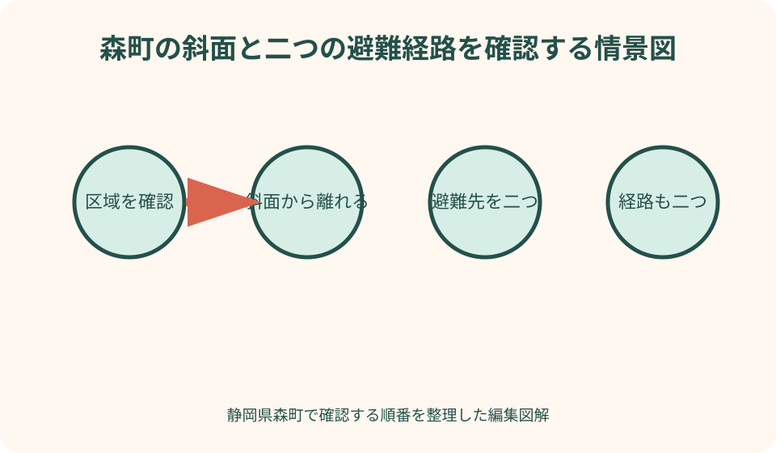
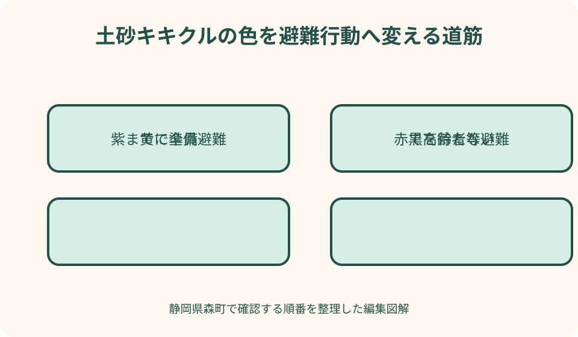

防災・家族の備え｜最終確認 2026-08-10
静岡県森町で土砂災害の危険が高まったら｜区域・キキクル・避難順
土砂災害から逃げる判断は、崖の異音や濁り水を見てからでは遅い場合があります。森町のハザードマップで区域を確かめ、町の避難情報と気象庁の土砂キキクルを早い段階から見て、道路が安全で明るいうちに危険な場所の外へ移る準備をします。

編集イラスト結論：区域・町の避難情報・キキクルを三つ同時に見る
最初に見るのは雨量の数字だけではなく、自宅が土砂災害警戒区域等に入るかです。森町防災ハザードマップで住所と建物位置を確かめ、崖、谷、沢、斜面、避難路との関係を平常時に紙へ書きます。
次に、森町が出す高齢者等避難や避難指示を確認します。町は地域の状況を踏まえて避難所開設や避難情報を知らせます。気象情報だけを見て町の発表を待ち続けるのではなく、危険を感じたら自主的に早く動きます。
三つ目が気象庁の土砂キキクルです。危険度を1キロ四方ごとに色分けし、10分ごとに更新します。自宅周辺の色だけでなく、避難経路と避難先の区域も見て、移動中に危険な斜面を通らないか確認します。
土砂災害は発生時刻と場所を正確に予測できません。黒色や土砂の流出を見てから避難する計画にせず、赤・紫へ上がる前から持出準備を終え、時間のかかる家族から移動します。
2026年5月からの新しい気象情報名を確認する
2026年5月から、大雨や土砂災害の気象情報は警戒レベルとの結び付きが分かりやすい体系へ変わりました。古い防災メモや検索結果に「土砂災害警戒情報」が残っていても、当日の気象庁画面で現行名称とレベルを確認します。
気象庁の現行説明では、レベル2土砂災害注意報、レベル3土砂災害警報、レベル4土砂災害危険警報、レベル5土砂災害特別警報という段階と、土砂キキクルを合わせて利用します。名称だけ暗記せず、取る行動を家族表へ書きます。
土砂キキクルは無色、黄、赤、紫、黒で危険度を示します。高齢者等は遅くとも赤が出た時点、一般の人は遅くとも紫が出た時点で、危険な場所から速やかに避難を始めることが重要だと気象庁は案内しています。
黒は、命に危険が及ぶ土砂災害が切迫しているか、すでに発生している可能性が高い状況です。黒になるまで待つ色ではありません。紫以前に安全な場所へ移る計画を作ります。
気象情報とキキクルは完全に同じタイミングで変化しない場合があります。どちらか低い方だけを選ぶのではなく、町の避難情報、区域、現地の雨と道路、家族の移動時間を含めて早い判断を採ります。
森町防災ハザードマップで住所と地区図を開く
森町公式は、全町図のほか三倉、天方、森、一宮、園田、飯田の地区別ハザードマップを公開しています。全町図だけで終えず、自宅住所に対応する地区図を拡大し、建物の位置を確認します。
地図には土砂災害危険箇所や河川氾濫区域、避難所等の防災施設が示されています。土砂と洪水の色を取り違えず、凡例、発行・更新情報、地図の範囲を確認します。
自宅が色の境界付近なら、画面の線だけで区域外と断定しません。森町危機管理課や静岡県の地理情報システムで住所を伝え、指定状況を確認します。隣の地番の判断をそのまま使わないようにします。
区域外でも、地図に表現しきれない小さな斜面や、倒木、道路への土砂流入が起こる可能性があります。地図の色がないことを安全保証とせず、現地地形と過去の水・土砂の跡を加えます。

自宅だけでなく二つの避難経路を確認する
最寄りの避難所までの最短経路が、崖下、谷筋、沢沿い、橋、冠水しやすい道路を通る場合があります。距離だけで選ばず、危険箇所を避ける第二経路を決めます。
雨天時に初めて道を探さず、晴天の昼間に家族で歩きます。車いす、ベビーカー、杖、夜間照明を使う家族は実際の移動時間を測り、段差、未舗装、狭い道を記録します。
避難先は指定避難所だけではありません。危険区域外の親族・知人宅、頑丈な建物なども候補にし、事前に受入れを相談します。町が開設している避難所は発災時に最新情報を確認します。
自宅から安全な方向へ移る経路と、外出先から直接避難する経路を分けます。家族全員が自宅へ集合してから逃げる計画は、移動を増やし、危険区域へ戻ることにつながります。
レベル2・黄色までに持出準備と連絡を終える
危険度が黄色の段階は、まだ避難しなくてよいという意味ではありません。区域内の家族は、気象と町の情報を継続確認し、持出袋、薬、靴、雨具、照明、連絡手段を玄関近くへまとめます。
車を使う家庭は、燃料、駐車方向、道路規制を確認します。ただし強雨や冠水後は車避難が危険になります。早い時間に出発できない場合の徒歩・近隣建物への代案を決めます。
離れて暮らす家族へは「危なくなったら電話して」ではなく、何時の情報を見て、どこへ移るかを短文で共有します。電話がつながらない場合も現地家族が判断できるようにします。
避難所へ持つ物を増やし過ぎず、両手を使える重さにします。重要書類は写しやデータも活用し、家財を高所へ運ぶ作業で避難を遅らせません。
レベル3・赤では避難に時間がかかる人から移動する
森町が高齢者等避難を出した地域では、高齢者、障害のある人、乳幼児がいる世帯など避難に時間を要する人と支援者は、危険な場所から移動を始めます。対象か迷って支度を続けず、早い側へ判断します。
気象庁も、土砂災害警戒区域等に住む高齢者等は、遅くとも土砂キキクルの赤で避難開始するよう案内しています。町の情報と色のどちらかを待つのではなく、早く届いた危険の知らせを使います。
支援者は自分の安全を確保できる時間内だけ訪問します。強雨後に迎えへ行く前提を置かず、平常時に集合場所、鍵、車いす、薬、連絡先を共有します。
避難先へ移る道がすでに危険なら、無理に遠い避難所へ向かいません。近くの安全性が高い建物や、斜面から離れた場所への移動を検討し、119番や町へ現在地を伝えます。
レベル4・紫を待たず、一般の人も危険区域から離れる
森町から避難指示が出た地域では、危険な場所にいる人は速やかに避難します。一般の家族も、気象庁の土砂キキクルで紫が出た時点を遅くとも避難開始の目安とし、家の点検を続けません。
紫になってから荷造り、戸締り、車移動を一から始めると間に合わない可能性があります。黄色や赤のうちに準備を終え、紫では持出袋を背負って出られる状態にします。
家族が不在でも、危険な自宅へ迎えに戻りません。学校、職場、施設の安全確認方法を平常時に決め、各自が現在地から安全な場所へ移る計画にします。
ペット、家財、車を理由に避難を遅らせません。同行避難に必要なケージや用品は平常時に準備し、受入先を確認します。間に合わない物は残して人命を優先します。
前兆現象を見に行かず、気付いたら直ちに離れる
斜面から小石が落ちる、亀裂が広がる、湧水が変わる、沢水が濁る、地鳴りのような音がするなど、普段と異なる現象に気付いたら危険です。原因を確かめに近づかず、その場から離れます。
前兆が必ず現れるとは限らず、見えない夜間や強雨時もあります。前兆を避難開始条件の中心にせず、区域、町の避難情報、キキクルを早い段階から使います。
安全な場所へ移った後、発見時刻、場所、見えた方向を町や119番へ伝えます。危険箇所の写真を撮るため戻ったり、斜面へ照明を向けて近づいたりしません。
近隣へ知らせる場合も、自分が危険区域へ入りません。電話や安全な位置からの声掛けを使い、支援者だけが遅れて取り残されないようにします。
夜間・強雨になる前の立退き避難を優先する
土砂災害の危険は雨のピークだけで決まりません。土壌に水がたまり、雨が弱まった後も危険が続く場合があります。「小雨になってから出る」という計画を固定しません。
日没後は道路の土砂、小石、冠水、側溝のふた外れを見つけにくくなります。予報とキキクルで危険が高まる見込みなら、明るいうちに危険区域外へ移ります。
強雨時は車でも視界が悪く、冠水や倒木で戻れなくなることがあります。車を使う人ほど早く出発し、通行止め情報を確認します。河川や崖沿いの近道を選びません。
避難所の開設を待つ間にも危険が高まる場合は、安全な親族宅等への自主避難を検討します。受入先、鍵、寝具、薬、ペットを平常時に相談しておきます。

避難が遅れた場合は斜面から少しでも離れて命を守る
屋外移動がすでに危険な場合、無理に指定避難所へ向かうことで土砂に近づくおそれがあります。近くの頑丈な建物や、今いる建物の中で斜面から最も離れた側へ移るなど、その時点で少しでも安全な場所を選びます。
木造住宅の上階へ移れば常に安全とは限りません。斜面の方向、建物構造、土砂が来る高さを考え、外へ安全に出られない緊急時の次善行動として扱います。早期の立退き避難の代わりにはしません。
窓や外壁から離れ、丈夫な机などで頭を守り、靴とライトを手元へ置きます。家族が分かれている場合は、現在地と選んだ部屋を短く共有します。
切迫時は119番や町へ住所、人数、けが、斜面との位置を伝えます。通信が混雑する場合に備え、位置を説明できる住所・地番・目印を紙へ書いておきます。
情報が解除されてもすぐ自宅へ戻らない
警報や避難情報が解除されても、斜面の水分、道路被害、倒木、電線、二次崩壊の危険が残る場合があります。町の帰宅・道路情報と避難先の案内を確認します。
自宅の様子を見に行く場合は、一人で崖下や沢沿いへ入らず、明るい時間に安全な経路を使います。土砂や亀裂、傾いた木を見つけたら近づかず、管理者へ連絡します。
建物へ土砂が入った、基礎や擁壁に変化がある場合は、自己判断で居住を再開しません。建築や土木の専門家、町の窓口へ状況を伝え、安全確認を受けます。
被害を片付ける前に、安全な範囲から全景、土砂の高さ、亀裂、建物との位置を撮影します。保険、証明、支援制度で必要な記録を町へ確認します。
良い点：地図と予測で現象を見る前に動ける
ハザードマップの良い点は、晴天時に自宅と避難路の危険を確認できることです。雨の中で斜面を見に行かず、どの方向へ離れるかを家族で決められます。
土砂キキクルは10分ごとに更新され、最大6時間先までの予測を使って危険度を示します。避難に必要な時間を考え、現在の雨だけでなく先の高まりを見て動けます。
町の避難情報は、開設避難所や対象地域を知る入口になります。気象庁の面的な危険度と町の地域情報を組み合わせることで、どこへ移るかを具体化できます。
家族の移動時間を測っておけば、同じ赤色でも誰から出発するかが明確になります。「もう少し待つ」という曖昧な相談を減らせます。
注文したい点：一つの色や通知だけでは住所ごとの安全を決められない
注文したい点は、キキクルのメッシュ色だけで自宅一棟の安全を断定できないことです。危険度が高まった領域と土砂災害警戒区域等を重ね、現地の斜面と避難路を確認します。
通知サービスは通信障害、電池切れ、設定ミスで届かない場合があります。スマートフォン、町の同報無線、ラジオ、家族連絡など複数経路を用意します。
ハザードマップは重要ですが、指定後の地形変化、小規模な斜面、倒木、道路被害の全てを示すものではありません。地図外だから避難不要と決めません。
避難情報の名称を理解しても、移動に30分かかる人が発表後に荷造りを始めれば遅れます。情報名より、準備終了時刻と出発条件を家族表へ落とし込むことが必要です。
代案・結論：遠い避難所一つに固定せず、安全な方向を複数持つ
指定避難所までの道が崖沿いなら、危険区域外の親族宅、近くの頑丈な建物などを第二候補にします。利用できるかを平常時に確認し、災害時の思いつきで私有地や施設へ入らないようにします。
車が使えない場合は、徒歩で移れる早い時間に出発します。歩行が難しい家族は、地域支援、福祉サービス、家族の迎えを平常時に相談し、強雨後の迎えを前提にしません。
夜間の危険上昇が予測される場合は、情報が低い段階でも明るいうちの自主避難を検討します。空振りを恐れて危険区域へ残るより、戻る条件を決めて早く動きます。
結論として、今日行うのは自宅、斜面、二つの避難先を地区別ハザードマップへ印し、家族ごとの移動時間を書くことです。次に赤・紫で誰が何をするかを一行ずつ決めます。
家族に残す土砂災害避難カード
避難カードには、住所、地区名、区域指定、斜面の方向、避難先二つ、経路二つ、徒歩・車の所要時間を書きます。地区別ハザードマップの該当箇所を印刷して添えます。
情報欄には、森町防災情報、土砂キキクル、町の公式連絡手段、ラジオ、家族の遠方連絡先を並べます。古いサービス名やURLは年1回更新します。
行動欄には、黄色で荷物確認、赤で時間のかかる人が移動、紫までに危険区域から全員退避、黒では屋外移動を無理にしない、と家庭の手順を書きます。町の避難情報が先ならそれに従います。
持出欄には薬、眼鏡、補聴器、充電器、雨具、靴、ライト、身分証、乳幼児・介護・ペット用品を個人別に記します。一人が全員分を持たないよう分けます。
大石の視点：斜面と道路の記録は家の判断にも直結する
大石の視点では、土砂災害の確認は建物だけで終わりません。道路、境界、擁壁、沢、排水、農地、山林の位置を現地で確認し、誰が管理する場所かを分けます。
森町の実家を遠方家族が管理する場合、現地家族へ斜面を見に行かせず、ハザードマップ、避難先、移動時間、連絡先を実家カルテで共有します。台風前に帰省することが安全とは限りません。
擁壁のひびや斜面の変化を見つけても、自分で掘る、土を除く、水を流す作業は避けます。写真と位置図を町、道路管理者、専門家へ渡し、境界と施工範囲を確認します。
私は、区域内だからすぐ売る、区域外だから問題ない、とは判断しません。避難負担、道路、建物、保険、維持費、家族の距離を整理し、住む、貸す、売る、管理する全ての選択へ記録を使います。
まとめ：黒や前兆を待たず、明るく安全なうちに区域外へ
静岡県森町で土砂災害の危険が高まったら、森町防災ハザードマップ、町の避難情報、気象庁の土砂キキクルを同時に確認します。
2026年5月から気象情報体系が変わっています。古い名称だけに頼らず、現行のレベル2から5の土砂災害情報と、キキクルの黄・赤・紫・黒を行動へ結び付けます。
高齢者等は遅くとも赤、一般の人は遅くとも紫で危険な場所から避難を始めます。黒、地鳴り、土砂の流出を待たず、夜間・強雨前に移動します。
まず地区別地図へ自宅、斜面、避難先、二経路を記し、家族ごとの移動時間を測ってください。早く動く条件を一枚へ残すことが、情報を命を守る行動へ変えます。
公式情報・確認先
掲載内容は次の一次情報を基礎に整理しました。営業、料金、催し、交通は変わるため、出発前または手続き前にリンク先で最新情報を確認してください。
- 森町防災ハザードマップ（静岡県森町、2026-08-10確認）
- 防災情報（静岡県森町、2026-08-10確認）
- 町指定避難所等について（静岡県森町、2026-08-10確認）
- 森町地域防災計画（静岡県森町、2026-08-10確認）
- 土砂キキクル（気象庁、2026-08-10確認）
- 新たな防災気象情報について（令和8年～）（気象庁、2026-08-10確認）